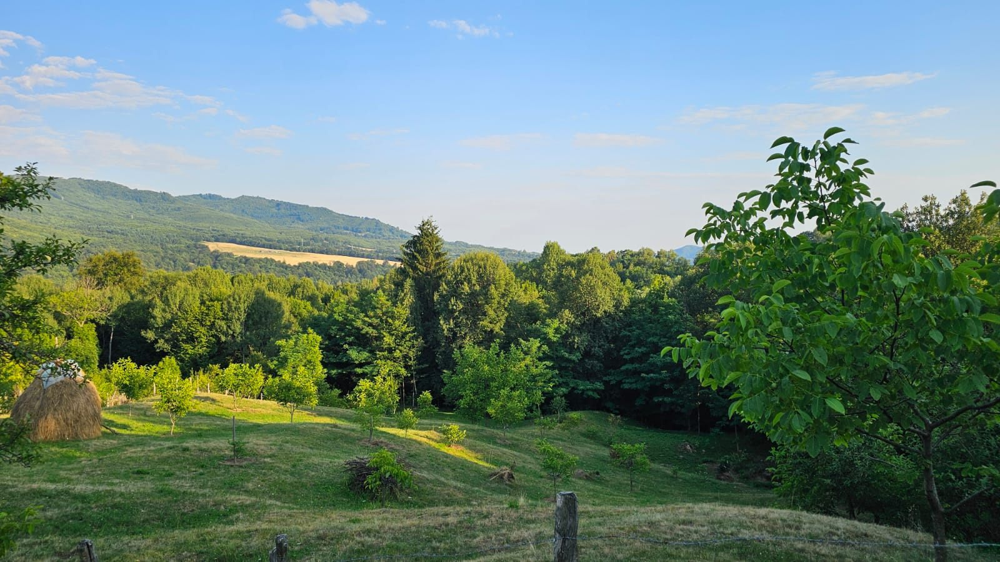

Povestea noastră
Un oraș, o casa la munte și dorința de a găsi echilibrul dintre cele două lumi.
Cine sunt
Cariera mea e în cod și ecrane. Am crescut la țară, iar legătura cu natura a rămas mai vie ca oricând — indiferent câte ore petrec în fața unui calculator. Este locul unde mă regăsesc cu adevărat și locul unde vreau ca și copiii mei să petreacă cât mai mult timp.
Am crescut la țară și fiecare vacanță din timpul studiilor mă aducea înapoi acasă — să ajut bunicii și părinții în grădină și gospodarie. Alături de sora mea și verișorii mei, copilăria a mirosit a pământ proaspăt și a libertate.
Familia noastră
Sunt căsătorită cu Adi, inginer de profesie, crescut și el la țară și conectat acolo cu tot sufletul. Avem doi băieți — Mati 8 ani & David 2 ani — și trăim în București, dar cu gândul mereu la Nucșoara.
La fiecare două weekenduri și în toate vacanțele, facem drumul spre munte. Acolo am renovat casa și ne ocupăm de grădină, iar timpul se mișcă altfel.
Locul
Casa noastră este în zona de munte a Argeșului — un loc unde se aude liniștea și totul este viu și real. Acum zece ani am plantat primii nuci. Azi avem 35 care cresc frumos și ne amintesc că lucrurile bune cer timp.
Anul trecut am plantat cartofi și mazăre în paie — primul nostru experiment adevărat. Anul acesta am făcut un gărdulet de nuiele, un pat ridicat și am început să cultivăm mai mult. Este o mini grădină-experiment în permacultură și locul unde descopăr, alături de copiii mei, cum funcționează natura.

De ce acest blog
Nu sunt expertă în grădinărit. Nu vin cu expertiză și nu promit rețete sigure. Vin cu povești adevărate, cu greșeli asumate și cu bucuria unui om care redescoperă pământul.
Acest blog este pentru prietenii, colegii și cunoscuții care vor să vadă cum arată viața noastră de la țară — cu toate încercările, surprizele și bucuriile ei mici. Îl scriu pentru noi, ca să păstrăm amintirile. Și îl scriu pentru voi, ca să vă amintesc că echilibrul dintre viața de la oraș și cea de la țară este posibil și merită căutat.
La Nucșoara nu avem perfecțiune — avem autenticitate. Și asta, cred eu, e mai de preț.
Nu am venit la țară să fugim de oraș. Am venit să ne amintim cine suntem.